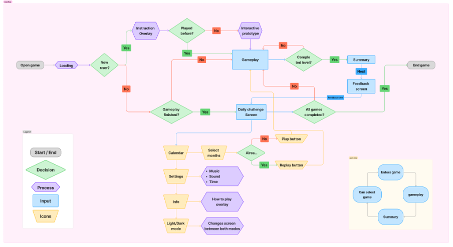
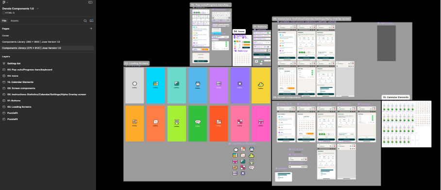
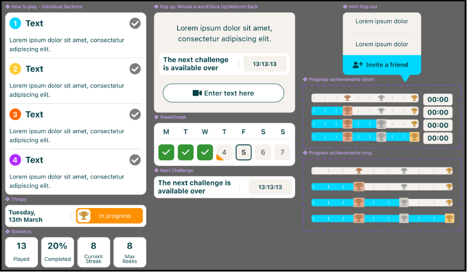
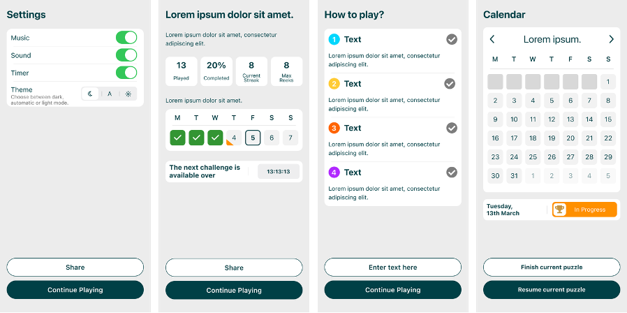
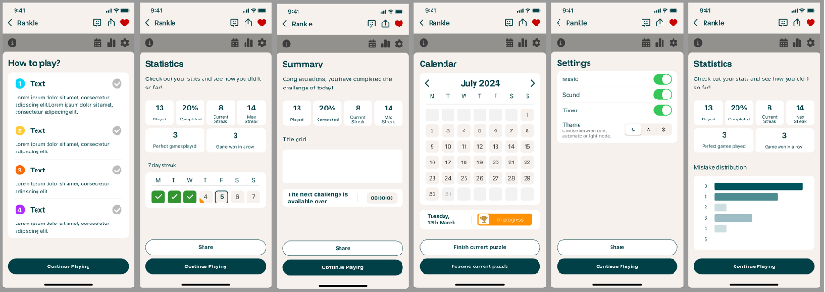
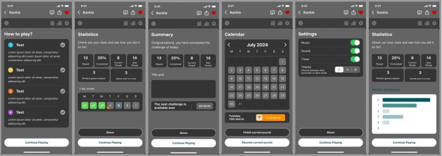
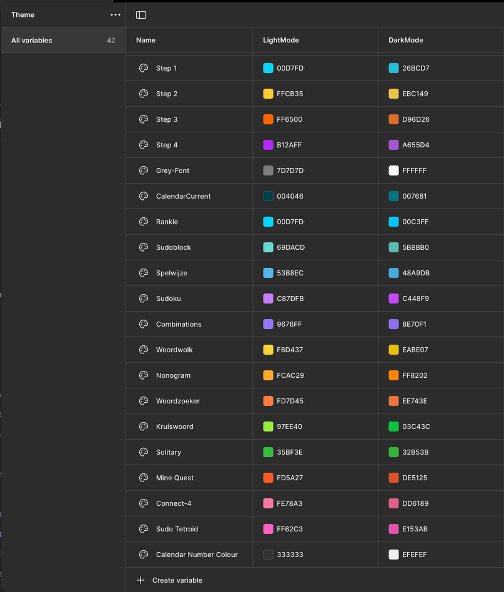
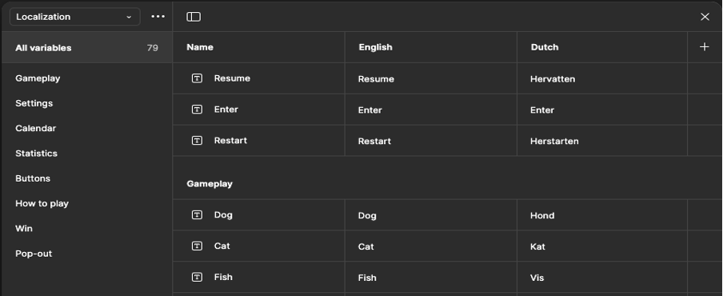
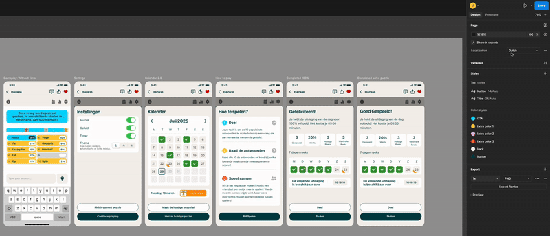
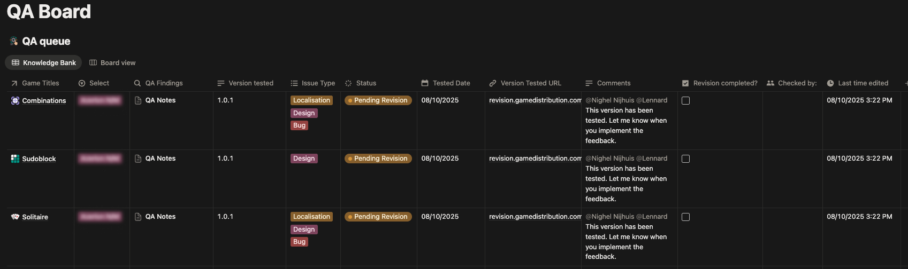

Denda Games
Game design and product development experience focused on UI/UX systems, workflows, and scalable design solutions.

My Role
I focused on improving product performance through structured planning and system design. I worked across the full product lifecycle, supporting teams with documentation, performance insights, and workflow improvements.
I also contributed to balancing systems, onboarding team members, and aligning cross-functional teams through roadmaps and planning tools.
User Journey
I led the design of a new user flow for HTML5 games targeting a 35–65 audience. The goal was to create intuitive navigation suited for casual gameplay within media platforms.

Component Library
I created a reusable design system in Figma to improve consistency and efficiency across all games. This included UI components, layouts, and design rules to standardise production.




Design Variables
Colour System
I developed a colour variable system supporting both light and dark mode, ensuring readability and visual consistency across platforms.




Language System
I implemented language variables allowing seamless switching between English and Dutch, improving usability for both international and local clients.


Additional Contributions
- Playtesting and QA
- Creation of a QA system using Notion
- Internal tools and workflows
- PR and communication
